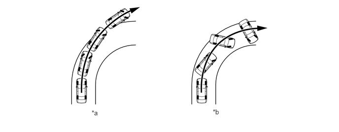
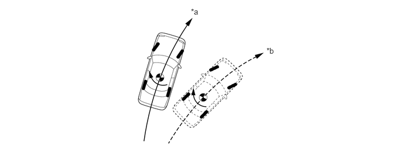

NM35K0CC
_54
制动
_079357
制动控制/动态控制系统
_0384806
制动控制系统（HV 车型）
CO
控制
F
制动控制/动态控制系统 制动控制系统（HV 车型） 控制 车辆稳定性控制 (VSC)
系统控制
a.
ABS 和 TRC 系统主要有助于确保制动和加速时的车辆稳定性，而 VSC 系统确保车辆的方向稳定性。根据路况、车速、突然的转向操作和其他外部影响，可能会出现严重的转向不足或转向过度情况。在这种情况下，VSC 系统控制各车轮的制动力和驱动轮的驱动力，以最大程度地减少转向不足或转向过度并确保车辆稳定性。
i.
VSC 系统使用来自横摆率传感器等各种传感器的信号检测车辆状况，以控制制动液压和发动机转矩。
ii.
超过轮胎的横向抓地力时，可能会出现以下情况。

1.938,2.313 2.25,2.469
0.313,0.156
10
false
*a
4.5,2.292 4.813,2.448
0.313,0.156
10
false
*b
| *a | 转向不足
·
前轮的打滑程度高于后轮 |
*b | 转向过度
·
后轮的打滑程度高于前轮 |
b.
严重转向不足判断
i.
防滑控制 ECU 根据目标横摆率和实际横摆率判定车辆是否转向不足。驾驶员转动方向盘时，如果基于车速和方向盘角度的车辆实际横摆率小于目标横摆率，则防滑控制 ECU 判定车辆由于转弯角速度不足而转向不足。
转向不足判断

3.396,0.125 3.708,0.323
0.313,0.198
10
*a
4.74,0.823 5.052,1.021
0.313,0.198
10
*b
| *a | 实际车辆路径（实际横摆率） | *b | 基于目标横摆率的车辆路径 |
c.
严重转向过度判断
i.
防滑控制 ECU 根据打滑角度和打滑角速度判定车辆是否转向过度。打滑角度和打滑角速度大时，防滑控制 ECU 判定车辆转向过度。
转向过度判断
3.542,0.146 3.854,0.302
0.313,0.156
10
*a
3.927,0.26 4.24,0.417
0.313,0.156
10
*b
| *a | 车辆重心的路径 | *b | 车辆纵向中心线 |

|
打滑角度 | - | - |
d.
VSC 工作方式
i.
防滑控制 ECU 判定车辆转向不足时，防滑控制 ECU 限制驱动力并控制各车轮的制动力，以产生使转向不足降至最低的力矩。
转向不足控制
3.594,1.948 5.125,2.354
1.531,0.406
10
false
.

|
制动力 |
|
控制力矩 |
ii.
防滑控制 ECU 判定车辆转向过度时，防滑控制 ECU 主要控制外侧车轮的制动力以产生朝向转弯外侧的力矩，从而使转向过度降至最低。该控制确保车辆稳定性，同时还可降低速度。
转向过度控制
3.552,0.698 3.708,0.896
0.156,0.198
10
false
.
|
|
制动力 |
|
控制力矩 |